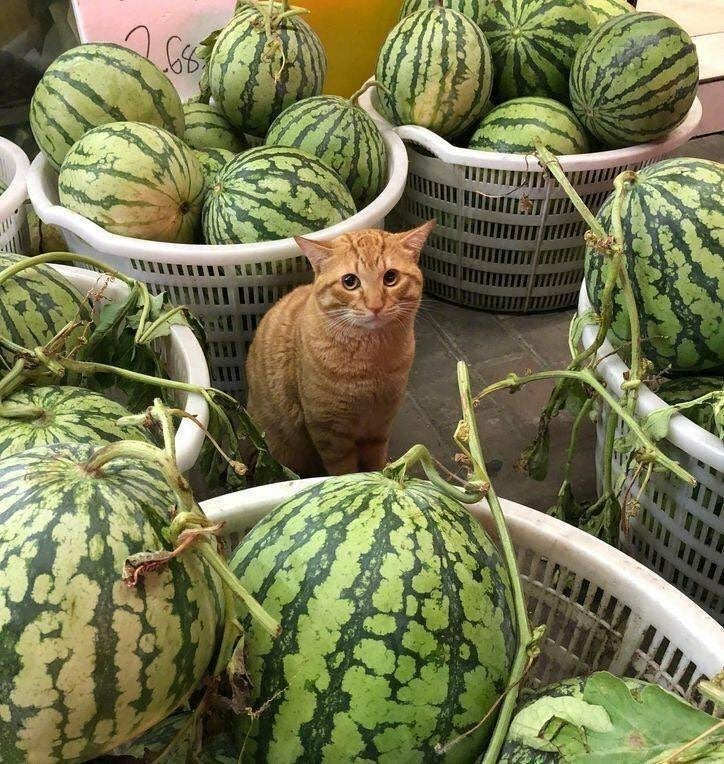
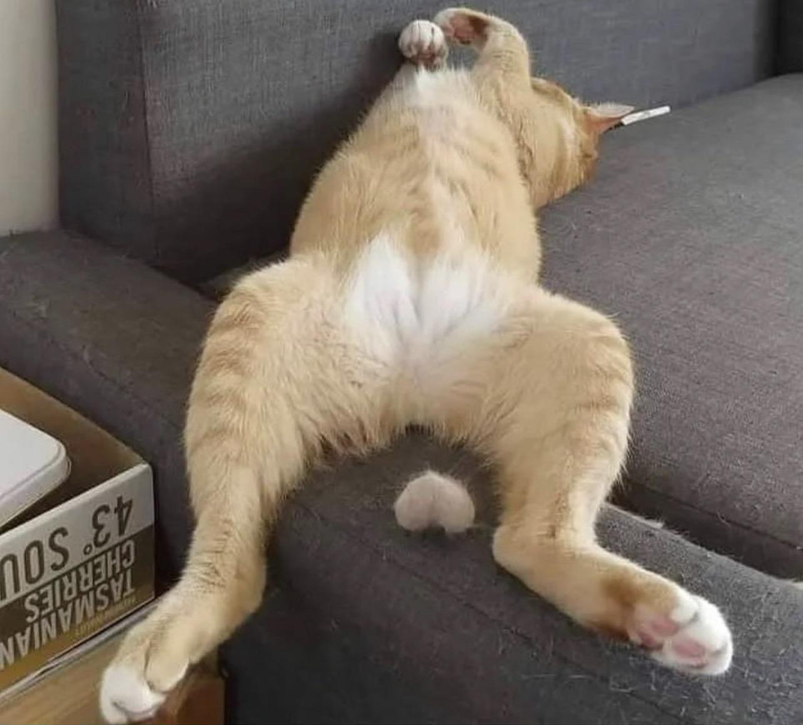
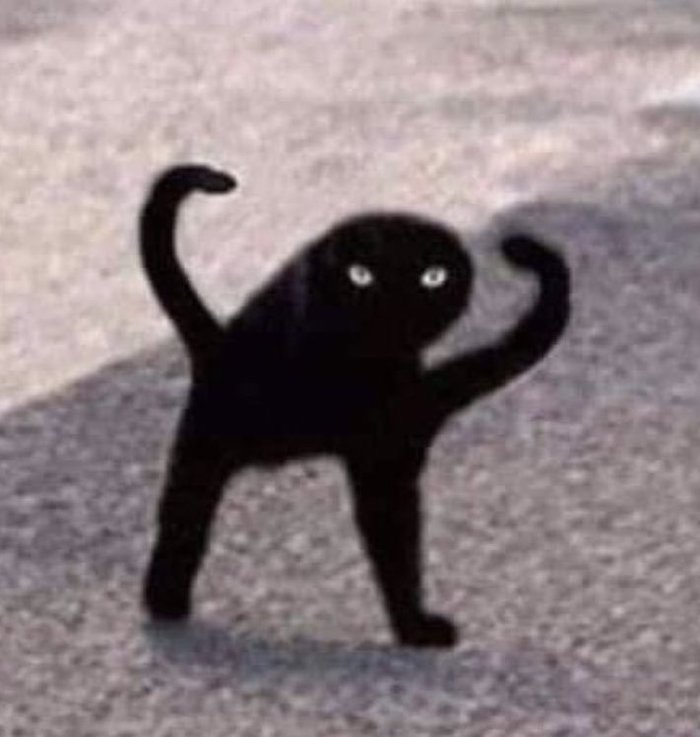
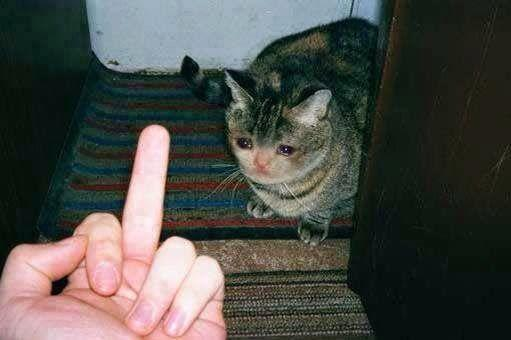
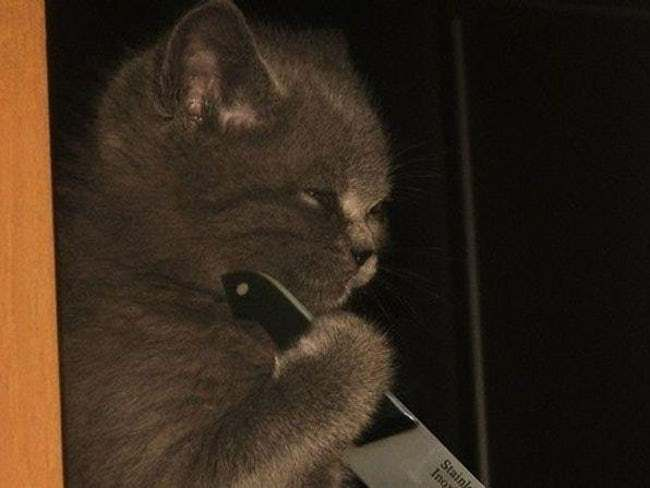
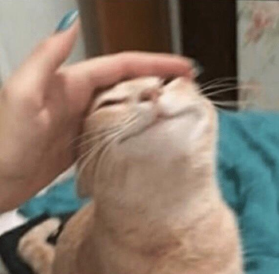
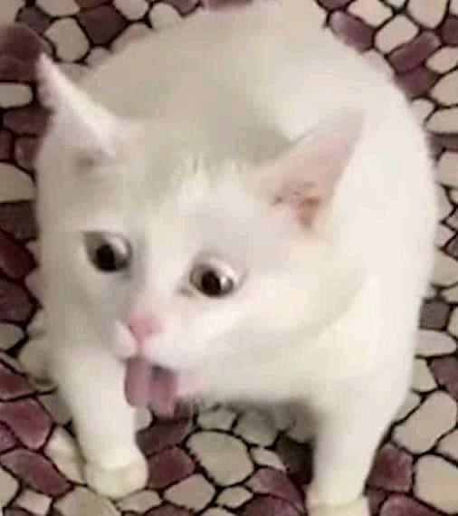

| Description | Note | Image |
|---|---|---|
| Chat pastèque | 8/10 Je lui en achète 17. |
 |
| Chat doit faire mal | 3,2/10 Feu bijoux de famille... |
 |
| Chat ??? | ?/10 ⍙⊑⏃⏁ ⏃⋔ ⟟ ⌰⍜⍜☍⟟⋏☌ ⏃⏁ ? |
 |
| Chat victimisé | 11/10 Protect him at all costs! |
 |
| Chat vengeur | 6/10 J'ai un peu peur quand même |
 |
| Chat qui t'aime beaucoup trop | 5000/10 Je peux en avoir un ??? Si vous plé |
 |
| CHAT VA SORTIR | 0/10 JE PREPARE LA BASSINE |
 |